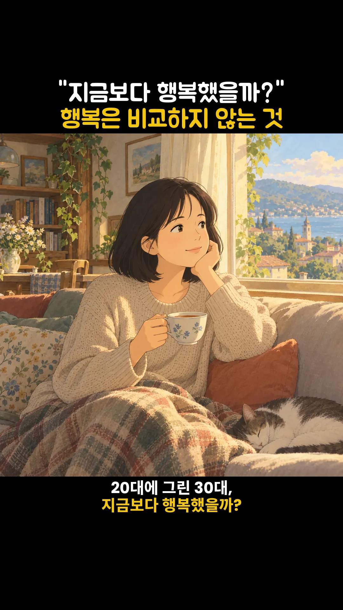

솔담랩 강의 · 11월 1기 모집
숏폼 붕어빵
숏폼 반자동화 4주
써 둔 글 한 편이 AI 그림과 목소리로 숏폼 영상이 됩니다.
틀은 한 번 잡고, 다음 편부터는 글만 바꿉니다.
- 내 글써 둔 글 한 편
- 컷 원고클로드가 나눔
- 그림AI 생성 · 내가 고름
- 목소리구글 음성
- 조립스크립트
- 영상내가 확인 · 올림
촬영 없음 · 얼굴 없음 · 녹음 없음 · 편집 프로그램 없음

실제 영상 보기 ↓
- 기간
- 4주 · 총 4회
- 일정
- 매주 월요일 저녁 8시 · 11월 2일(월) 시작 · 줌
- 정원
- 4명 · 3명 이상 모이면 개강
- 수강료
- 1기 25만 원
- 남는 것
- 내 영상 2편 + 내 스킬 1개 + 내 틀
이 영상의 화면 배치와 리듬을 초 단위로 뜯어 틀 한 장으로 만들었습니다.
그 틀 위에 내 글을 얹습니다. 글과 그림은 내 것, 끝 카드에는 내 이름이 들어갑니다.
169만은 이 영상의 숫자입니다. 수업은 만드는 법을 드립니다. 조회수는 약속하지 않습니다.
유튜브에서 보기 ↗
02 / 실물 영상
직접 만든 영상 네 편
수업에서 만드는 틀은 1번입니다.
2~4번은 같은 방식을 다른 틀에 쓴 것입니다.
1 · 수업에서 만드는 틀
「행복은 비교하지 않는 것」
0:00 / 1:06
원고 칸 8개 · 그림 15장 · 구글 음성 · 스크립트 조립.
4주 뒤 이 틀로 내 영상 2편이 나옵니다.
1분 6초수업에서 만드는 틀
0:00 / 0:23
원고만 쓰면 스크립트가 조립합니다.
영어 한 문장 릴스다른 틀
0:00 / 0:14
카드 틀 하나에 문장만 바꿔 넣으면 다음 편. 편집 프로그램 없이 코드로 합성했습니다.
14.7초다른 틀
4 · 다른 틀
「월급 들어오자마자 텅장 됐어」
0:00 / 0:06
정지 화면에 문장을 코드로 얹었습니다.
6.9초다른 틀
03 / 만드는 법
네 단계로 만듭니다
01원고
실제 원고 · 「행복은 비교하지 않는 것」제목 "지금보다 행복했을까?"
행복은 비교하지 않는 것
1 20대에 그린 30대,
지금보다 행복했을까?
2 얼마 전 남편에게 물었다.
20대 때 상상한 30대는 어땠냐고.
3 남편이 말했다.
"뭘 상상했든, 지금보다 행복하진 않았을 것 같아."
내 글을 12~15컷으로 나눕니다.
칸 8개 — 제목 · 자막 · 발음 · 쉼 · 강조 · 그림 장면 · 끝 카드 · 목소리
02그림
컷마다 그림 한 장. AI로 만들고 내가 고릅니다.
03목소리
실제 완성 음성audio.m4a2편_행복은비교 구글 음성이 자막을 읽습니다. 헷갈리는 낱말은 발음 칸에서 고칩니다.
04조립
스크립트가 그림 · 목소리 · 자막을 세로 영상 한 편으로 묶습니다. 명령 한 줄, 1분 안팎.
반자동화의 뜻 — 2편째부터는 원고 파일의 글만 바꾸고 한마디로 돌립니다. 틀 · 그림 스타일 · 목소리는 그대로. 남길 문장 고르기 · 그림 고르기 · 완성본 확인 · 올리기는 내 손입니다.
04 / 수업 대상
이런 분께 맞습니다
- 써 둔 글은 있는데 영상은 만들어 본 적이 없는 분
- 얼굴과 목소리를 드러내지 않고 숏폼을 시작하고 싶은 분
- 한 편으로 끝내지 않고 같은 틀로 계속 만들고 싶은 분
이런 분께는 맞지 않습니다
- 촬영 · 편집 기술을 배우고 싶은 분
- 영상을 대신 만들어 받고 싶은 분
- 조회수를 보장받고 싶은 분
05 / 4주 · 총 4회
매주 월요일 저녁 8시
한 주에 한 단계씩
1주내 글을 원고로
설치 확인 · 기준 영상 함께 보기 · 내 글을 12~15컷 원고 파일로
→ 원고 파일 1편
2주그림과 목소리
컷별 그림 프롬프트 · 그림 12~15장 · 목소리 파일
→ 그림 12~15장 · 목소리
3주1편 완성 · 내 틀
조립 · 확인 → 1편 완성 · 글꼴과 색을 내 취향으로 고친 「내 틀」
→ 1편 영상 · 내 틀
4주한마디로 2편
내 순서를 한마디로 묶는 스킬 · 스킬로 2편 · 발표
→ 2편 영상 · 내 스킬
끝나면 남는 것
- 내 글로 만든 숏폼 영상 2편
- 글만 바꿔 다음 편을 시작하는 나만의 스킬 1개
- 글꼴 · 색 · 위치를 내 취향으로 맞춘 「내 틀」
06 / 준비물
수업 전에 챙길 것
- PC
- 윈도우 또는 맥
- 클로드 Pro
- 별도 결제
- 구글 클라우드 계정
- 목소리용 · 카드 등록이 필요합니다
월 100만 자까지 무료 구간, 한 편은 약 350자 · 넘기면 요금이 붙습니다 - 그림 도구
- 무료 이미지 생성 도구에서 직접 만들어 폴더에 넣기 · 추가 결제 없음
선택 — 명령 한 줄로 15장을 받고 싶으면 ChatGPT Plus(월 20달러) - 파이썬 · ffmpeg
- 무료 · 수업 전 설치 안내를 드립니다
- 내 글 1~2편
- 블로그 글 · 일기 · 메모 · A4 반 장에서 한 장
카메라와 마이크는 필요 없습니다.
아픈 기억이나 다른 사람의 사적인 이야기가 중심인 글은 피해 주세요.
07 / 수강료 · 일정 · 신청
수강료
비슷한 실시간 과정과 나란히
쇼츠 자동화 4주 과정 · 실시간 4회49.5만 원
숏폼 붕어빵 · 실시간 4회 · 정원 4명25만 원
비슷한 실시간 강의 6곳의 판매 페이지 · 2026년 10월 확인 · 시간당 1.5만~12.4만 원
비교한 6곳 전부 보기
- 쇼츠 자동화 4주 과정 · 실시간 4회
- 49.5만 원 · 4시간
- 바이브코딩 원데이 · 오프라인
- 30만 원 · 5시간
- 클로드 코드 원데이 · 오프라인
- 13만 원 · 3시간
- 클로드 스터디 4주 · 실시간
- 29만 원 · 약 8시간
- 숏폼 편집 줌 클래스 · 1회
- 6.9만 원 · 2시간
- 숏폼 원데이 · 줌 송출
- 6만 원 · 4시간
- 숏폼 붕어빵 · 실시간 4회 · 정원 4명
- 25만 원 · 회당 6.25만 원
1기 수강료
250,000원4회 — 한 번에 6.25만 원- 실시간 수업 4회 · 정원 4명이라 한 사람씩 화면을 같이 봅니다
- 바로 쓰는 조립기 · 수업 자료
- 4주 동안 카카오톡 피드백
- 수업 녹화본 일주일
따로 드는 것 — 클로드 Pro · 구글 클라우드(카드 등록, 한 편 약 350자는 무료 구간 안)
신청하기 ↗{{환불 기준}}
- 일정
- 11월 2일(월)부터 매주 월요일 저녁 8시 · 줌 · 총 4회
11/2 · 11/9 · 11/16 · 11/23 - 회당
- {{회당 수업 시간}}
- 정원
- 4명 · 3명 이상 모이면 개강
- 모집
- 11월 2일(월)까지
- 결제
- 계좌 입금 · 개강이 확정되면 입금 안내를 드립니다
- 1신청 폼 보내기
- 23명 이상 모이면 개강 확정 · 입금 안내
- 311월 2일(월) 저녁 8시 첫 수업
08 / 자주 묻는 질문
자주 묻는 질문
영상 편집을 한 번도 해 본 적이 없어요.
편집 프로그램을 쓰지 않습니다. 원고 칸을 채우고 그림을 고르는 일이 수업의 대부분입니다.
왜 카드를 등록해야 하나요?
목소리를 만드는 구글 음성이 결제 계정을 요구합니다. 월 100만 자까지 무료 구간이고 한 편은 약 350자입니다.
클로드 Pro로 되나요?
매주 단계를 클로드 Pro 기준으로 짰습니다. 수업 당일에는 5시간 사용 한도를 남겨 두고 들어와 주세요.
맥에서도 되나요?
윈도우와 맥 모두 받습니다. 맥은 설치 안내가 따로 있고, 화면이 조금 다를 수 있습니다.
수업에 빠지면 어떻게 하나요?
녹화본을 일주일 동안 볼 수 있습니다.
환불은 어떻게 되나요?
{{환불 기준}}
숏폼 붕어빵 · 11월 1기
11월, 써 둔 글 한 편으로
시작합니다
신청 링크 확정 전입니다.